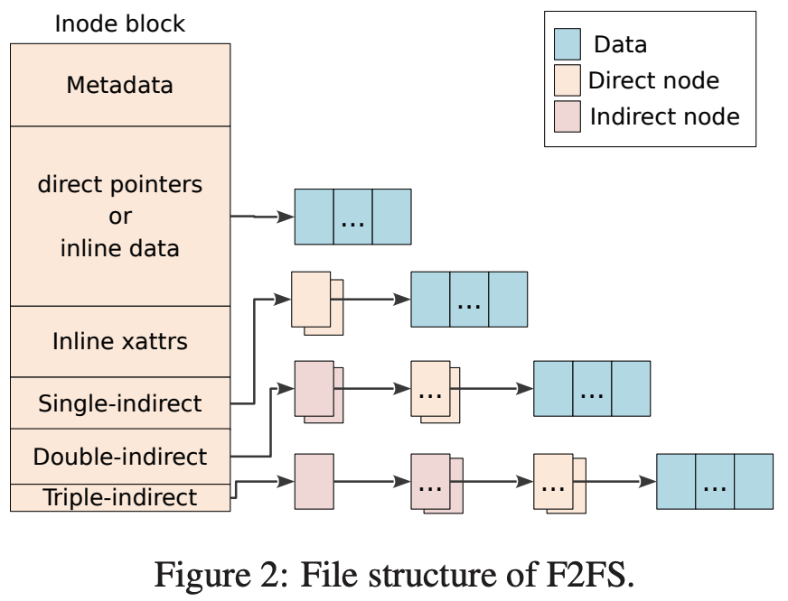

본 논문은 F2FS: A New File System for Flash Storage (FAST '15) 를 읽고 정리한 글입니다.
별도의 명시가 없는 한, 본 글의 모든 그림은 위 논문에서 가져왔습니다.
본 문서는 아직 #draft 상태입니다. 읽을 때 주의해 주세요.
1. Abstract, Introduction
요약
- F2FS 는 flash storage 에서 사용하기 위해 고안된 file system 이다.
- Sequential write, append-only logging 을 이용한다.
- 기존의 EXT4 file system 보다 더 나은 성능을 보여준다고 한다.
배경 - Flash Media
- Flash memory 는 erase-before-write 나 sequential write, P/E cycle 등의 특징이 있다.
- 요즘은 여러개의 NAND flash chip 들을 controller 에 bus 로 연결해서 사용한다.
- Controller 펌웨어에는 FTL 이 들어있고, 여기에서 이런 Flash memory 의 특징들을 generic block interface 로 변환한다.
기존의 문제점
- 빈번한 random write 는 internal fragment 를 유발해 성능이 나빠지게 만든다.
- 이러한 random write 는 실제 사용 환경에서 생각보다 자주 일어나고 특히 자원이 한정적인 모바일 환경에서 더 문제가 된다.
- 실 환경을 테스트한 이전 연구에 따르면, 다음과 같은 결과가 나왔다고 한다.
- Facebook 앱의 경우 sequential write 에 비해 150% 더 많은 random write 를 수행한다고 한다.
- 또한 전체 IO 의 80% 가 random write 였고, 70% 의 random write 가
fsyncsyscall 에 의해 수행된다는 것을 알았다. - 이런
fsyncsyscall 은 SQLite 에 의해 수행되는 경우가 많다고 한다.
- 이런 random write 의 문제는 LFS 나 copy-on-write 를 사용하면 줄일 수 있다.
- BTRFS: copy-on-write 방식의 FS
- NILFS2: LFS 방식의 FS
- 하지만 위와 같은 fs 들은 flash media 에 최적화되어 있지 않고, 따라서 다소 성능과 수명의 측면에서 비효율적이라고 한다.
F2FS 란?
- F2FS 는 위와 같은 문제점을 해결하기 위해, 기존의 LFS 를 flash media 에 최적화시켰다고 한다.
- 또한 generic block interface 도 제공한다.
디자인 고려사항
Flash-friendly on-disk layout
- 섹션 2.1 내용
- 데이터에 segment 단위로 block 을 할당해 zone 에 저장한다
- cleaning 은 section 단위로 수행한다
- 이러한 단위들은 FTL 의 작업 단위에 맞춰서 불필요한 copy 과정을 줄인다.
Cost-effective index structure
- 섹션 2.2 내용
- LFS 에서는 data block 과 inode 의 index block 가 변경되었을 경우 새로운 공간에 write 한다.
- 파일의 사이즈가 큰 경우, 파일 마지막 쯤의 data block 은 inode 상에서 여러 indirect block index 를 타고 내려가다가 마지막 direct block index 에 해당 data block 의 위치가 저장될 것이다.
- 이때 이 파일이 수정될 경우를 inode block tree 에서 bottom-up 으로 살펴보자.
- 일단 수정된 block 은 다른 장소에 write 될 것이다.
- 그럼 이때 해당 block 의 direct index block 또한 수정하기 위해 다른 곳에 새로 write 할 것이고,
- 해당 direct index block 의 indirect block 또한 수정하기 위해 다른곳에 새로 write 하는 작업이 반복될 것이다.
- 따라서 많은 양의 write 가 수반되고, 이것을 wandering tree 문제라고 한다.
- 이것을 막기 위해 F2FS 에서는 node address table 을 사용한다.
Multi-head logging
- 섹션 2.4 내용
- 여러개의 segment 를 사용해 하나의 segment 에만 sequential write 하는 것이 아닌 여러개에 하게 되는데
- 여기서 예상되는 수정 빈도에 따라 data 와 metadata 를 다른 segment 에 저장해 hot-cold separation 을 수행한다.
Adaptive Logging
- 섹션 2.6 내용
- F2FS 는 LFS 와 유사하게 random write 를 sequential write 로 변환하여 처리하는데
- 이때의 단점은 sequential write 의 성능이 보장되기 위해서는 여유 공간이 필요하다는 것이다.
- 따라서 F2FS 에서는 공간이 부족해 질 경우 성능 저하를 완화하기 위해 threaded logging 을 사용한다.
- 즉, internal fragmentation 이 많은 dirty segment 의 free space 에 중간중간의 live block 을 건너뛰며 sequential write 하는 것.
- 이렇게 함으로써 cleaning 에 소요되는 오버헤드를 공간이 부족한 상황에서 줄일 수 있다.
fsync acceleration with roll-forward recovery
- 섹션 2.7 내용
- Metadata write 는 small synchronize write 로 수행되는데 이는 성능을 저하시키기에 metadata write 를 최소화하고 효율적인 roll-forward recovery mechanism 으로 복구할 수 있는 기능을 F2FS 에 추가했다고 한다.
실험 방법
- F2FS 는 널리 사용되는 세 file system (EXT4 와 BTRFS, NILFS2) 와 비교하여 그의 성능을 측정했다.
- 측정할 때는 mobile, server 두 부류로 나눠서 진행했다고 하며,
- Server 의 경우에는 SATA SSD 와 PCIe SSD 두 세부 부류로 또 나눠서 진행했다고 한다.
2. Design and Implementation of F2FS
2.1. On-Disk Layout
단위: Segment, Section, Zone
- 일단 F2FS 의 모든 단위는 FTL 의 작업 단위에 맞게 설계되어 있다.
- Segment: Volume 공간 전체를 동일한 크기의 segment 로 나눈 것.
- Segment 는 F2FS 의 최소 관리 단위이다. 그리고 FS 초기화시에 레이아웃을 잡는 데에 사용된다.
- Section: Segment 가 모인 것
- Zone: Section 이 모인 것
Layout
- F2FS 에서는 전체 volume 을 다음의 6개의 구역으로 구분한다:

Superblock (SB)
- 여기에는 storage partition format 시에 결정되는 (따라서 변경이 불가능한) partition information 이나 default parameter 들이 저장된다.
Checkpoint (CP)
- 기본적으로는 LFS 의 Checkpoint region 과 유사한 기능을 한다.
- 다음과 같은 것들이 저장된다:
- CP 에는 두 checkpoint pack 이 저장된다.
- Checkpoint pack 에는 특정 시점에의 일관된 F2FS 상태가 저장되어 있고, crash recovery 에 사용된다.
- 이 두 checkpoint pack 은 두 segment (0번과 1번) 에 각각 저장된다
- 둘 중 하나의 checkpoint pack 에는 현재의 상태가 작성되고, 하나의 checkpoint pack 에는 이전 상태가 작성 완료된 상태로 보관된다.
Segment Information Table (SIT)
- 이것은 기본적으로는 LFS 의 Segment Usage Table 과 유사한 역할을 한다.
- 즉, Main Area 의 valid block 들에 대해 그의 개수와 bitmap 을 담고 있다.
- 이러한 정보들은 Cleaning 에 사용되는 것
Node Address Table (NAT)
- 기본적으로는 LFS 의 Inode map 과 유사하다.
- 즉, inode number 를 이용해 해당 inode 가 저장된 위치를 찾을 수 있게 하는 역할이다.
Segment Summary Area (SSA)
- 기본적으로는 LFS 의 Segment Summary Information 과 유사하다.
- 즉, Main Area 의 block 들이 어느 inode 에 연결되어 있는지 (ownership) 을 매핑해 놓은 것
- 이러한 정보 또한 Cleaning 에 사용된다.
Main Area
- 여기에는 실제 데이터가 들어가는 공간으로, 4KB block 들로 구성되어 있다.
- Block 에는 두가지 종류가 있다:
- Node block: 여기에는 inode 혹은 direct/indirect index 가 저장된다.
- Data block: 여기에는 file 이나 directory 가 저장된다.
- 하나의 section 에는 node block 과 data block 이 섞여있을 수 없다고 한다.
파일을 찾는 여정
/dir/file을 찾는다고 해보자.
/- 우선 NAT 를 이용해
/에 대한 inode 를 찾고 1 - 그 inode 에서 index block 을 따라가 내용물을 찾고
- 해당 내용물에서
dir에 대한 inode number 를 얻어낸다.
- 우선 NAT 를 이용해
dir- NAT 와
dir에 대한 inode number 로 inode 를 찾고 - 그 inode 에서 index block 을 따라가 내용물을 찾은 뒤
- 내용물에서
file에 대한 inode number 를 얻어낸다.
- NAT 와
file- NAT 와
file에 대한 inode number 로 inode 를 찾고 - 그 inode 에서 index block 을 따라가 내용물을 찾으면 끝.
- NAT 와
2.2. File Structure
Node, Node ID, NAT
- F2FS 에서는 Node 라는 것을 사용하는데, 이것을 LFS 와 비교하며 살펴보자.
- LFS 의 경우에는
- Inode 에 direct block, indirect block 들의 포인터가 저장되고
- File content 를 찾을 때에는 (1) Inode map 와 inode number 로 inode 를 찾고, (2) 여기 저장되어 있는 포인터로 data block 들을 찾아가는 방식을 사용한다.
- 하지만 이 방식은 Wandering tree 문제가 있다.
- Inode, indirect block 들은 block 단위로 log 에 저장되는데
- Inode - indirect block - data block 이 모두 포인터로 연결되어 있어
- Data block 이 변경되어 새로 append 되면 주소가 바뀌니까 indirect block 또한 변경되어야 하고,
- 이것은 또 indirect block 이 append 되어 주소가 바뀌기에 이것에 영향받는 또 다른 indirect block 이나 inode 가 append 되어야 하기 때문에
- 결국에는 data block 의 변경이 연관된 모든 block 을 변경을 야기하는 “Propagation” 이 일어나게 된다.
- 따라서 F2FS 에서는 이것을 Node 라는 것을 도입해 해결한다.

- 일단 문제가 되는 것이 block 들을 포인터로 연결해 놓는 것이기 때문에 포인터를 줄이고 그 대신 Node ID 와 NAT 을 이용한다.
- 우선 Node 는 (1) Inode 뿐 아니라 (2) Indirect block, 그리고 (3) indirect block 의 자식으로 data block 의 포인터를 저장하는 direct block 까지를 전부 Node 라고 부른다.
- 그리고 각각의 Node 에는 Node ID 가 부여되어 있고, 이 Node ID - Node addr 변환을 NAT 가 해주는 것.
- 즉, Node 간의 연결을 pointer 로 바로 하기 보다는 한단게 추상화 시켜서 ID 로 연결되게 하고, 실제 주소는 NAT 로 알 수 있게 해서
- Data block 가 update 되어 주소가 변경되었을 때 그에 영향받는 Node 를 전부 update 하는 것이 아닌 Direct node 와 NAT 만 update 하는 방법으로 wandering problem 을 해결한 것.
- 연결방식을 정리해 보면 다음과 같다.
| SRC | DEST. | CONN |
|---|---|---|
| Inode (direct pointer field) | Data block | Ponter |
| Inode (single-indirect field) | Direct node | Node ID + NAT |
| Inode (double, triple-indirect field) | Indirect node | Node ID + NAT |
| Direct node | Data block | Pointer |
| Indirect node | Direct node | Node ID + NAT |
- 이때 변경 과정을 비교해 보자.
- 아래의 과정은 sequential write 의 관점에서 봤을 때이다; inode map, NAT 등의 random write 는 카운트하지 않았다.
- 파일의 크기가 8MB 에서 4GB 일 때, Inode 의 Single indirect field 가 사용되고, 이때 data block 이 변경되면
- LFS 의 경우에는 direct block -> inode block 순서로 총 두개가 변경되고
- F2FS 의 경우에는 direct node 하나만 변경되면 된다.
- 파일의 크기가 4GB 를 넘어가면, Inode 의 Double indirect field 가 사용되고, 이때 data block 이 변경되면
- LFS 의 경우에는 direct block -> indirect block -> inode block 순서로 총 세개가 변경되고
- F2FS 의 경우에는 마찬가지로 direct node 하나만 변경하면 된다.
전체 파일 구조
- 위 그림에서 보이듯이, inode 에는 다음과 같은 field 가 있다.
- Metadata: 뭐 파일 권한 등의 메타데이터가 저장되어 있는 공간이다.
- Direct pointers: 10개까지의 data block pointer 를 저장하는 공간이다.
- Single-indirect: Direct node 를 한번 거쳐 data block 을 연결하는 공간이다. 여기에는 두개의 direct node ID 를 저장할 수 있다.
- Double-indirect: Indirect node + direct node 총 두번을 거쳐 data block 을 연결하는 공간이다. 여기에는 두개의 indirect node ID 를 저장할 수 있다.
- Triple-indirect: Indirect node + indirect node + direct node 총 세번을 거쳐 data block 을 연결하는 공간이다. 여기에는 한개의 indirect node ID 를 저장할 수 있다.
- 그리고 Inline 어쩌고 하는 field 가 있는데
- Inline data:
- Direct pointer 에 data block 의 pointer 를 저장할 수도 있지만,
- 파일 사이즈가 작다면 pointer 로 연결하지 않고 이 공간에 data 를 직접 넣을 수도 있다.
- 파일 사이즈가 3692 byte 보다 작으면 이곳에 넣을 수 있다.
- inline xattrs (inline extended attributes):
- 추가적인 임의의 attribute 2 들을 저장할 수 있는 곳이라고 한다.
- Attribute 사이즈가 200 byte 보다 작으면 이곳에 넣을 수 있다.
- Inline data:
2.3. Directory Structure
#draft 이 섹션은 추후에 다시 정리될 예정입니다.
- 하나의 directory file 은 여러 4KB 짜리 directory entry (dentry) 로 구성되어 있고
- 여기에는 bitmap 과 slot-name pair 를 저장하는 두 array 로 구성되어 있다.
- 이 bitmap 어떤 slot 에 대해 유효한지 아닌지 나타내게 되고
- slot 에는 hash, inode number, file name length, file type 이 들어간다.
- directory 파일은 multi-level hash table 을 이용해 이 dentry 들을 관리한다.
- F2FS 에서는 directory file 에서 file name 에 해당하는 dentry 를 찾을 때
- 우선 file name 을 hash 해
- directory inode 안에 있는 hash table 을 level 0 부터 max level 까지 돌아다니며 찾는다.
- 각 level 에서는 2개에서 4개까지의 dentry block 으로 구성된 bucket 하나를 스캔한다
- N 이 dentry 의 개수라고 할 때 O(log(N)) 의 시간이 걸린다고 한다.
- dentry 를 더 빨리 찾기 위해 bitmap, hash 값, file name 순서대로 찾는다고 한다.
- Server 와 같은 dentry 가 많이 필요한 환경에서는 dentry 를 위한 공간을 더 많이 잡아놓을 수 있다
- hash table 의 low level (level 0 에 가까운) 의 사이즈가 커지면 dentry 에 더 빨리 도달할 수 있다.
2.4. Multi-head Logging
Hot-warm-cold separation
- LFS 에서는 하나의 큰 log area 만 사용했다면,
- F2FS 에서는 기본적으로 6개의 log area 를 지원하고, 데이터의 접근 빈도 (hot-cold) 에 따라 다른 log area 에 저장한다.
- F2FS 에서는 node 와 data 에 따라 다르게 접근 빈도를 hot, warm, cold 세 단계로 구분한다.

- 우선 node 부터 보면
- Direct node 가 cold 가 아닌 이유는 NAT 를 사용한다 하더라도 data block 이 변경되었을 때 무조건 변경되기 때문이다.
- 그 중에서도 directory 는 더욱 변경이 빈번하기 때문에 hot 으로,
- 일반 파일은 상대적으로 덜 빈번하기 때문에 warm 으로 분류되는 것.
- 그리고 indirect node 는 direct node 가 추가되거나 삭제되는 경우가 아니면 변경되지 않기에 cold 로 분류한다.
- Direct node 가 cold 가 아닌 이유는 NAT 를 사용한다 하더라도 data block 이 변경되었을 때 무조건 변경되기 때문이다.
- Data 의 경우에는,
- 위에서도 말한 것처럼 directory 는 변경이 잦기 때문에 dentry block 은 hot 으로 분류,
- 일반 사용자의 파일은 변경이 상대적으로 덜하므로 warm 으로 분류,
- cleaning 에서 살아남거나, 사용자에 의해 cold 라고 명시되거나 이미지나 비디오 같은 애들 (얘네는 확장자로 식별) 은 거의 안바뀌므로 cold 로 분류한다.
- Log area 는 기본적으로 6개가 구성되는데, 여기에 node 와 data 의 hot, warm, cold 이 각각 저장된다.
- 이것은 4개나 2개로도 조정 가능한데,
- 4개일 때는 warm 과 cold 를 구분하지 않고 저장하고 (node-hot, node-warm-cold, data-hot, data-warm-cold)
- 2개일 때는 node 와 data 만 구분해서 저장한다.
FTL Compatibility
#draft 이 섹션은 추후에 다시 정리될 예정입니다.
- FTL 을 고려하지 않고 위와 같은 hot-warm-cold 구분을 해버리면 추후에 GC 가 발생해 이것이 다 섞여버릴 수 있기 때문에 F2FS 에서는 FTL 과 호환되도록 zone 을 구성한다.
- FTL 은 크게 다음과 같은 알고리즘을 사용한다.
- block associative: 하나의 data flash block
- set associative: 연속된 여러개의 data flash block
- fully associative: 모든 data flash block
- 최근의 FTL 들은 random write 를 처리하기 위해 fully associative 혹은 set associative 를 사용한다.
- 그리고 FTL 의 GC 가 다른 log area 의 내용을 섞어버리는 것을 방지하기 위해, log 를 다른 zone 에 저장한다.
- 이 방식은 set associative FTL 에 더 효과적이라고 한다.
2.5. Cleaning
- Cleaning 은 section 단위로 흩뿌려져 있는 invalid block 들을 모아서 free 상태로 만들어 logging 이 가능한 segment 를 확보하는 작업이다.
- cleaning 은 storage 의 용량이 채워지고 나면 수행되기에, cleaning overhead 를 제한하는 것은 일관된 성능을 제공하는 것에 필수적이다.
- 즉, 예측 가능한 성능을 제공할 수 있는 것.
- Cleaning 은 두 가지로 구분될 수 있다.
- Foreground cleaning: Free section 이 부족해졌을 때에만 수행
- Background cleaning: 주기적으로 kernel thread 가 생성돼 수행
Victim selection
- Cleaning 은 non-empty section 에서 cleaning 의 대상 (victim) segment 을 선정하는 것에서부터 시작한다.
- 선정하는 방법은 LFS 에서의 greedy 와 cost-benefit 방식을 그대로 사용한다.
- 각각의 방식을 언제 사용하는지는 정리해보면 다음과 같다.
| Policy | Cleaning |
|---|---|
| Greedy Policy | Foreground Cleaning |
| Cost-benefit Policy | Background Cleaning |
Foreground Cleaning - Greedy
- LFS 에서도 말했듯이, Greedy policy 는 util 이 낮은 순서대로 수행한다.
- 이 방식의 장점은 valid block 이 적은 segment 를 선택하기에, copy 하는 오버헤드가 상대적으로 적다는 것이다.
- 이 방식에서는 비교적 많은 segment 가 한번에 정리되기 때문에 application 레벨에서 느껴지는 latency 가 많이 줄어들기에 foreground 에서 수행한다고 한다.
- 즉, Foreground cleaning 은 공간이 거의 다 찬 비상상황이기 때문에 free segment 를 빨리 마련해주기 위해 greedy 를 사용한다는 것.
- F2FS 에서는 5% 의 여유 공간을 구비해 놓아 cleaning 에서 사용될 수 있도록 한다.
Background Cleaning - Cost-benefit
- Background 에서는 age 도 고려되는 cost-benefit 을 이용한다
- Section age 는 SIT 에서 가져온 segment 마지막 변경 시간들을 평균내어 산출한다.
- 이 방식이 일반 상황에서는 더 좋고, log area 내에서도 자연스럽게 hot-cold 를 나눌 수 있기에 사용하는듯.
Valid block identification and migration
- Section 내의 valid block 식별하는 것은 SIT 내의 valid bitmap 과 SSA 의 block 참조 여부를 사용한다.
- Foreground 에서는 valid block 을 옮길 때 실제로 IO 작업을 하지는 않는다.
- 대신 이들을 page cache 에 올려두고 dirty 로 마킹해둔다.
- 이들은 page cache 에 있다가 추후에 kernel 에 의해 다시 storage 로 flush 될 것이다.
- 이러한 방식은 lazy migration 라고 부르는데, IO 를 수행할 때의 오버헤드를 나중으로 미뤄 foreground cleaning 의 임팩트를 줄인다.
- 또한 이러한 방식을 사용하면 page cache 의 small write 와 합쳐져 더 큰 단위로 IO 를 수행할 수 있게 해 성능 저하를 방지할 수 있다.
- Background cleaning 은 foreground cleaning 이 수행될 때에는 수행되지 않는다.
Post-cleaning
- 모든 valid block 이 옮겨지면 해당 section 은 free 가 되기 위한 이전 단계인 candidate (pre-free) 상태가 된다.
- 이 상태의 section 은 checkpoint 가 생성된 이후에 free 로 바뀐다.
- 이전에 생성된 checkpoint 는 여전히 이 공간을 참조하고 있기 때문에, checkpoint 이전에 free 로 바뀌면 이전의 checkpoint 에서는 참조하지 못하기 때문이다.
2.6. Adaptive Logging
- LFS 에서도 등장한 normal logging 과 threaded logging 두 방식을 F2FS 에서도 사용한다.
- 가용 공간이 많을 때에는 normal logging 으로 작동하며, clean segment 에 random write 를 sequential write 로 변환하여 저장한다.
- 하지만 가용 공간이 없을 때에는 cleaning overhead 가 점점 커지므로, 가용 공간이 특정 임계값보다 작아지게 되면 threaded logging 으로 전환된다.
- 이 특정 임계값은 조정 가능하며, 기본으로는 전체 section 갯수의 5% 로 설정된다.
- Threaded logging 상황에서는, dirty segment 내의 invalid block (hole) 들에 logging 을 하게 된다.
- 즉, logging 와중에 valid block 을 만나면 다음 invalid block 까지 뛰어넘은 다음에 계속 logging 되는 것.
- 이 방식에서는 cleaning 가 필요하지는 않지만 중간중간 뛰어넘는 것 때문에 random write 가 발생하게 되어 normal write 에 비해 성능은 다소 떨어지게 된다.
- 하지만 이때의 random write 는 그냥 일반적인 (LFS 계열이 아닌 FS 에서의) random write 에 비해서는 spatial locality 가 높다고 한다 4.
2.7. Checkpointing and Recovery
- LFS 에서와 유사하게, F2FS 도 Checkpoint 를 생성하여 crash recovery 에 사용하게 된다.
- Checkpoint 가 필요한 상황 5 (
sync,umount와 같은 syscall 이 불리거나 foreground cleaning 을 하는 등) 이 오면 다음과 같이 checkpoint 를 생성한다.- Flush: Page cache 에 있던 dirty node 나 dentry block 들을 flush 한다.
- Suspend: 모든 writing (syscall 을 포함한) 을 보류한다.
- Metadata write: NAT, SIT, SSA 또한 storage 로 write 된다.
- Checkpointing: CP area 에 checkpoint pack 을 write 한다.
- Checkpoint pack 은 다음과 같은 정보를 담고 있다.
- Header, footer: Checkpoint pack 앞뒤에는 header 와 footer 가 적힌다.
- Checkpoint pack 을 write 할 때, 우선 header 부터 적고, write 가 완료된 다음에는 footer 를 적게 되는데
- 앞뒤로 적는 이유는 해당 checkpoint pack 가 write 완료되었는지 검증하기 위한 것이다.
- 즉, footer 가 없다면 write 가 완료된 것이 아닌 것으로 판단해 recovery 에서 사용하지 않는다.
- 그리고 여기에는 checkpoint version 이 들어가 최신의 checkpoint 인지 파악하는데 사용하게 된다.
- NAT, SIT bitmap: NAT 와 SIT 들 중 유효한 것을 표시하는 bitmap 이다.
- Checkpoint pack 생성 도중 NAT 혹은 SIT 가 변경되는 상황에 대응하기 위해 NAT 와 SIT 각각을 두개씩 사용한다 (NAT 두개, SIT 두개).
- 그리고 그 두개 중에 어떤 것이 유효한지를 이 bitmap 으로 표시하게 되는데,
- 만일 어떤 변경사항이 있으면 유효하지 않은 NAT 혹은 SIT 를 변경한 뒤, bitmap 을 바꿔 변경된 놈이 유효하다고 알려주게 된다.
- NAT, SIT journal: NAT 와 SIT 에서 최근에 변경된 entry 들을 적는다.
- 만일 checkpoint pack 생성 도중 NAT 혹은 SIT 에서 적은 수의 entry 들이 빈번하게 변경된다면, 해당 entry 의 4KB block 이 빈번하게 변경될 것이다.
- 이것은 checkpoint pack 생성과정을 느리게 할 것이기에, checkpoint pack 내에 마치 버퍼처럼 일정 갯수의 entry update 를 모아놓게 하여 지연을 방지한다 6.
- Summary blocks of active segments: 메모리에 적재되어 추후에 flush 될 것이었던 SSA 내용들이 적힌다.
- Orphan blocks: Orphan inode 들을 저장하는 공간이다.
- Orphan inode 는 inode 가 close 되기 전에 delete 되었을 때 생기게 된다.
- 가령 두 process 가 동일한 파일을 열고 한 process 가 이것을 지우면 이렇게 된다고 한다.
- 한 process 가 delete 하여 directory 에서 unlink 했을 때 나머지 한 process 말고는 이 파일에 link 한 process 나 directory 가 없다면 process 가 해당 파일을 close 한 다음에 진짜로 삭제해야 될 것이다.
- 하지만 process 가 갑자기 죽어버린다면 이것이 남아있게 되기에 orphan inode 로 분류하고 recovery 시점에 날려버리는 것.
- Orphan inode 는 inode 가 close 되기 전에 delete 되었을 때 생기게 된다.
- Header, footer: Checkpoint pack 앞뒤에는 header 와 footer 가 적힌다.
NAT, SIT update
- 조심하자: Layout 을 참고하면 NAT 와 SIT 는 sequential write 가 아닌 random update 가 수행되는 것을 알 수 있다.
- 완성된 checkpoint pack 를 적어도 하나는 갖고 있기 위해, checkpoint pack 은 두개를 유지한다.
- 이렇게 해서 한 checkpoint pack 을 write 하고 있을 때 crash 가 나더라도 이전의 checkpoint pack 은 남아있기 때문에 해당 시점으로 돌아가는 것이 가능하기 때문.
2.7.1. Roll-Back Recovery
- 갑작스러운 전원 종료 이후 F2FS 는 이 checkpoint 를 이용해 해당 시점으로 복구하게 된다.
- Recovery 하는 것은 다음처럼 진행된다.
- 우선 두 checkpoint pack 중 유효하고 더 최신의 것을 고른다.
- 위에서 말한 것처럼, 유효성은 header 와 footer 가 같은 version number 를 갖고 있는지 파악하는 것으로 가능하고
- 최신의 것은 version number 가 더 높은 것으로 선택한다.
- Orphan inode block 이 있는지 없는지 확인하고, 있다면 처리한다.
- Recovery 시점에 ophan inode block 이 존재한다면, inode block 과 data block 을 전부 날려버린다.
- 즉, 어디에서도 link 되어 있지 않지만 공간은 차지하고 있기 때문에 정리하는 것.
- Roll-forward 를 진행한다.
- 최신의 NAT, SIT 상태로 FS 가 서비스되도록 한다.
- 우선 두 checkpoint pack 중 유효하고 더 최신의 것을 고른다.
2.7.2. Roll-Forward Recovery
#draft 이 섹션은 추후에 다시 정리될 예정입니다.
- SQLite 같은 db 는 주기적으로
fsyncsyscall 을 해 storage 에 영구적으로 반영한다. - 일반적인
fsync과정은 checkpointing 을 수행해fsync시점을 완벽하게 언제든 복구 가능하게 하는 것이다. - 하지만 이것은 db 와 무관한 node 나 dentry block 을 전부 flush 하기에 아주 비효율적이다.
- 따라서 F2FS 에서는
fsync성능을 높이기 위한 효율적인 roll-forward recovery 를 사용하다. - 핵심 아이디어는 다음과 같다:
fsync를 했을 때 checkpointing 과정 전부를 수행하는 것 대신, data block 과 이것을 가리키는 direct node block 만 storage 에 write 하는 것이다.- 따라서 Checkpointing 에 수행되는 NAT, SIT, SSA 등은 write 하지 않기 때문에,
fsync에 소요되는 시간은 줄어들게 된다.
- 하지만 이때 crash 가 나게 되면 storage 의 NAT 에는 이동된 direct node block 을 참조하지 않기 때문에 data block 을 찾을 수 없게 된다.
- 이것을 방지하기 위해 이런 상황 (NAT 에는 반영되지 않은 direct node block 의 이동) 을 direct node block 에 플래그로 표시해 둔다.
- Roll forward 는 다음과 같은 방식으로 진행된다.
- 만일 이 latest stable checkpoint pack 에 반영된 log 의 위치이고
- 이 이후에 추가된 log (즉, latest stable checkpoint pack 에는 반영되지 않은 log) 라고 한다면,
- N ~ N + n 에 위치한 플래그가 표시된 direct node block 들을 전부 찾고
- 해당 node 들의 정보도 전부 찾고
- 그 정보들로 최근에 write 된 node block 들을 전부 page cache 로 올리고
- N + n 와 N-n 을 비교해 data indices
- 둘이 다르다면 N+n 의 정보로 page cache 에 있는 N-n data indices 을 업데이트한다
- N+n 은 dirty 라고 마킹한다.
- 완료된 다음에는 checkpointing 을 수행해 새로 checkpoint pack 생성되도록 한다.
#draft 이후 내용은 아직 정리 못했습니다..
Evaluation
3.1. Experimental Setup
3.2. Results
3.2.1. Performance on the Mobile System
3.2.2 Performance on the Server System
3.2.3. Multi-head Logging Effect
3.2.4. Cleaning Cost
3.2.5. Adaptive Logging Performance
4. Related Work
4.1. Log-Structured File Systems
4.2. Flash Memory File Systems
4.3. FTL Optimizations
5. Concluding Remarks
Footnotes
-
Root directory 에 대한 inode number 는 보통 정해져 있다. EXT4 의 경우에는 2 이다. ↩
-
이게 뭔지는 잘 모르겠다. ↩
-
아마 bitmap 에는 참조 여부와는 다른 정보를 담고 있는 것인지 아니면 더블체크 목적인지 모르겠다. ↩
-
하나의 dirty segment 의 hole 들이 채워진 다음에 다른 dirty segment 를 찾기 때문이라고 한다. 잘 이해는 안된다. ↩
-
주기적으로 checkpoint 를 생성하는지는 의문. ↩
-
이렇게 하는 것이 진짜 checkpoint pack 생성과정을 빠르게 해주는 지 잘 모르겠다. 4KB block 단위로 작업하지 않기 때문인건가. ↩